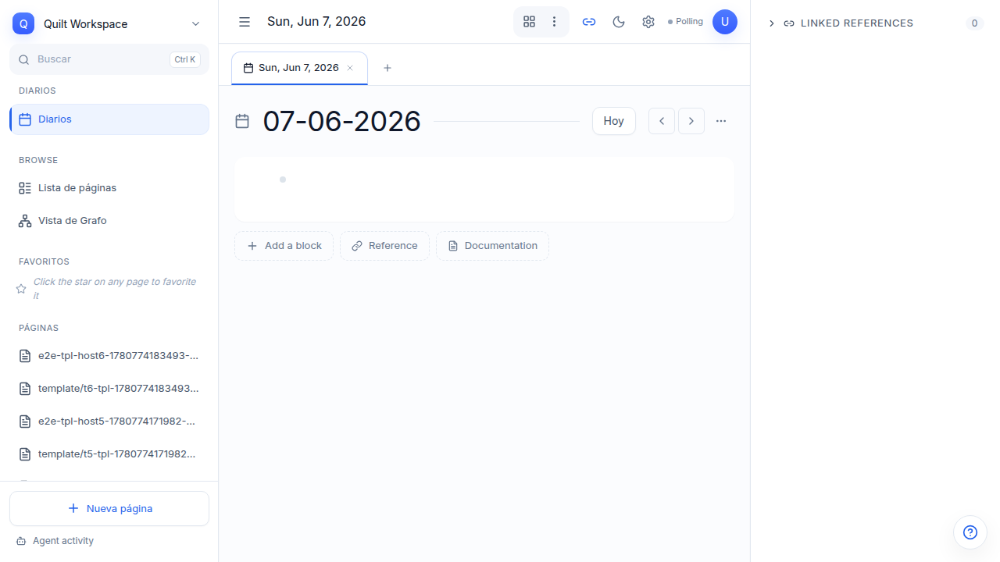
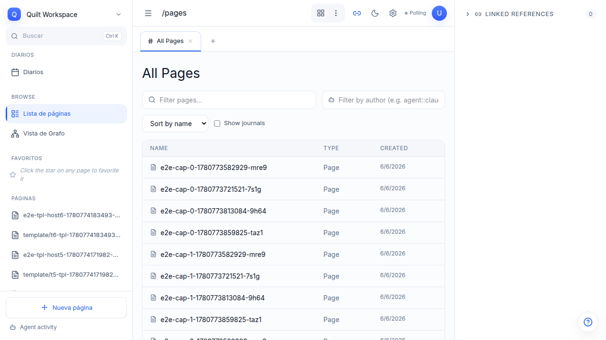
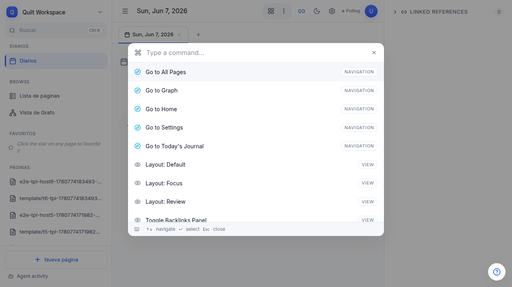
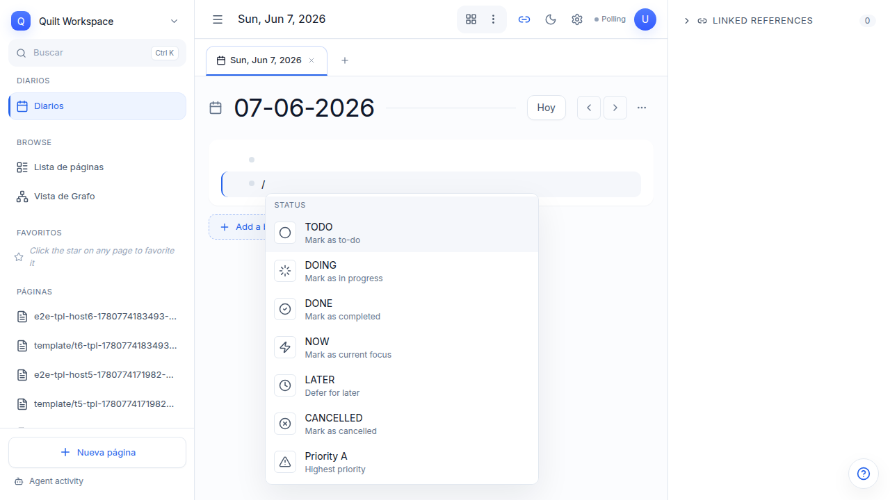
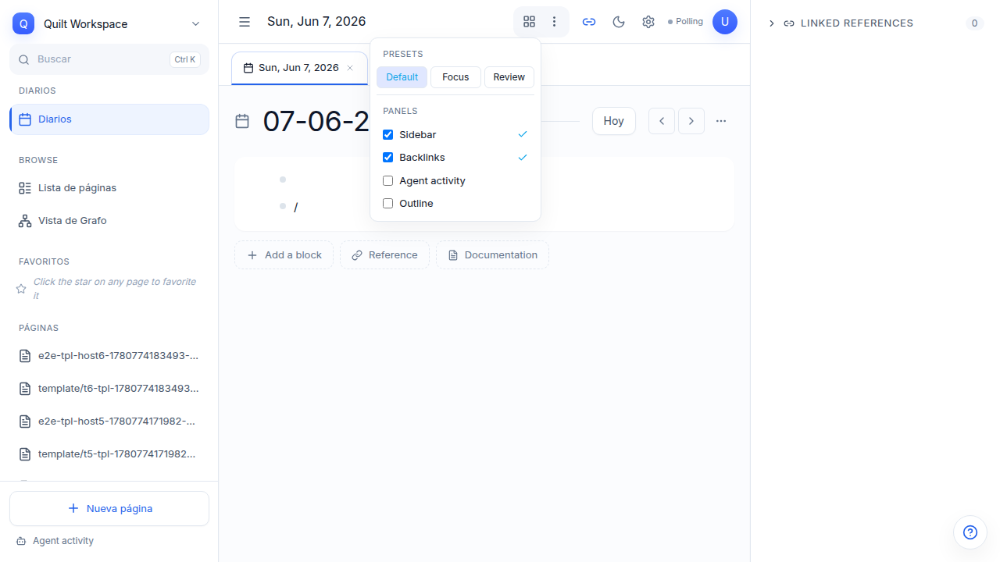
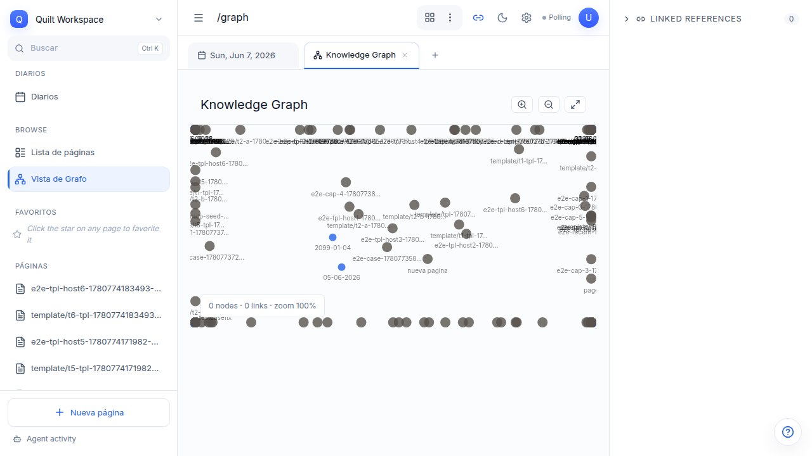
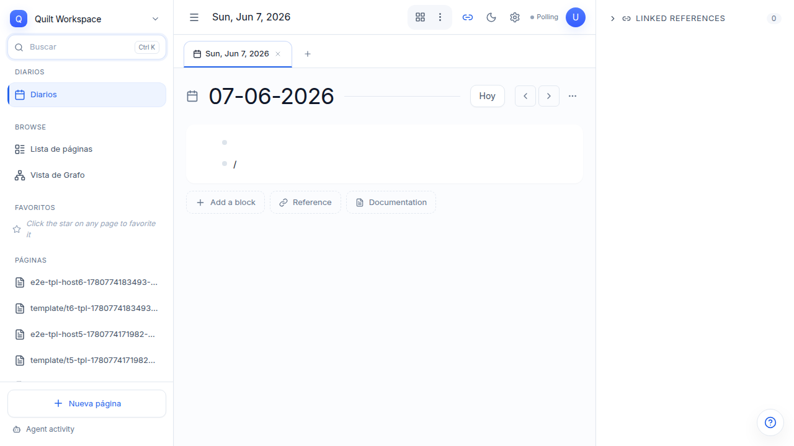

Tu workspace
inteligente en bloques
Quilt combina un outliner estructurado, un grafo de conocimiento y agentes de IA en un único workspace local-first. Esta guía te lleva de cero a productivo.
Instalación y puesta en marcha
Una sola orden para levantar todo el entorno de desarrollo.
just devEsto levanta el backend API en localhost:3737, el frontend React en
localhost:5173, y el watcher de WASM para operaciones de grafo.
En la primera ejecución, Quilt genera una API key y la imprime en la consola del servidor.
Créala en quilt-ui/.env:
VITE_QUILT_API_KEY=4eb04d25-ba93-44e3-baec-9c21ae5a9a2cDiarios, páginas y links
Redirección automática al diario de hoy
Al abrir / (la raíz), Quilt te lleva directamente al diario de hoy.
No más clicks para llegar a donde trabajas.

Vista de diarios
Los diarios son páginas diarias generadas automáticamente. Navega con Previous day / Next day, o haz clic en Today para volver al día actual.

Lista de páginas
Todas las páginas del workspace organizadas en una lista. Accede desde el sidebar
o crea nuevas desde el journal con Cmd+Shift+K → New page.

Paleta de comandos
Un atajo para todo. Pulsa Cmd Shift K desde cualquier lugar.

| Comando | Descripción |
|---|---|
| New page | Crear página en blanco |
| Search | Buscar en todo el workspace |
| Toggle theme | Alternar claro / oscuro |
| Layout: Default | Preset con sidebar + journal + backlinks |
| Layout: Focus | Solo journal, sin distracciones |
| Layout: Review | Journal + backlinks expandidos |
| Toggle Sidebar | Mostrar / ocultar sidebar |
| Toggle Backlinks | Mostrar / ocultar panel de referencias |
Slash commands — /
Transforma cualquier bloque. Escribe / al inicio para abrir el menú.

| Comando | Propiedades establecidas |
|---|---|
/h1, /h2, /h3 | level:: 1 | 2 | 3 |
/code | blockType:: code |
/quote | blockType:: quote |
/task | type:: task + status:: todo |
/query | type:: query + dsl:: (pide DSL) |
/card | card-shape:: (prompt de forma) |
/divider | Separador visual |
/bullet, /numbered | Lista de puntos o numerada |
Roles semánticos vs. tipos visuales: /task, /query
y /card establecen roles (propiedades como type::).
Los otros comandos (/h1, /code, etc.) definen formato visual
o tipo de bloque (blockType::).
Layout de paneles
Guarda y restaura configuraciones de paneles visibles.

| Preset | Paneles |
|---|---|
| Default | Sidebar + Journal + Backlinks |
| Focus | Solo journal |
| Review | Journal + Backlinks expandidos |
Accede desde el botón Layout en la barra superior o con
Cmd+Shift+K → Layout. Los presets se guardan en localStorage.
Grafo de conocimiento
Visualiza las conexiones entre tus bloques. Tema oscuro automático.

El grafo detecta data-theme="dark" del documento y se renderiza
con fondo oscuro automáticamente. No necesitas cambiar nada.
Búsqueda full-text
Busca en todo el workspace con autocompletado y filtros por propiedad.

Block Zoom — ?zoom=$blockId
Deep-link a un bloque específico. Su contenido se vuelve el foco de la vista.
/journal/2026-06-07?zoom=abc123-def456Esto abre el diario centrado en el bloque abc123, con su contenido
expandido y el resto de la página difuminado. Ideal para compartir referencias
precisas a bloques dentro de una página.
Fechas en lenguaje natural
En valores de propiedad puedes escribir fechas como texto plano.
| Escribes | Se resuelve a |
|---|---|
due:: today | La fecha actual |
due:: tomorrow | Mañana |
due:: yesterday | Ayer |
Las fechas NL se resuelven en el frontend al renderizar. El valor almacenado
en la base de datos es la cadena original (today, tomorrow,
yesterday), no la fecha calculada.
Bloques de agente — type:: agent-run
Ejecuciones de agentes externos registradas como bloques.
Un bloque con type:: agent-run registra una ejecución de un agente.
Propiedades:
| Propiedad | Descripción |
|---|---|
agent:: | Nombre del agente |
model:: | Modelo utilizado |
run-status:: | Estado: Queued / Running / Completed / Failed / Cancelled |
started-at:: | Timestamp de inicio |
completed-at:: | Timestamp de fin |
summary:: | Resumen de lo hecho |
Estados con color en la UI:
| Estado | Color |
|---|---|
| Queued / Cancelled | Gris |
| Running | Azul (info) |
| Completed | Verde (success) |
| Failed | Rojo (danger) |
Vistas guardadas — type:: view
Composición sobre herencia: múltiples vistas sobre el mismo query.
Una vista guardada es un bloque type:: view que
referencia un bloque query existente via data-source::.
Patrón composición: el bloque query contiene el DSL. El bloque view define el renderer y la configuración (group-by, sort). Múltiples views pueden compartir el mismo query.
| Propiedad | Tipo | Descripción |
|---|---|---|
view-type:: | select | table | kanban | calendar | list | graph | cards | timeline |
data-source:: | block-ref | UUID del bloque query |
view-name:: | string | Nombre legible |
view-icon:: | string | Icono Lucide |
group-by:: | property-key | Property de agrupación |
sort:: | JSON | Configuración de orden |
Propiedades de bloque
El sistema de tipos de Quilt. Todo es un bloque con propiedades.
| Propiedad | Tipo | Valores |
|---|---|---|
type:: | role | task, query, view, agent-run, comment |
status:: | select | todo, done, running, cancelled |
priority:: | select | A, B, C |
due:: | date | Fecha (soporta today, tomorrow, yesterday) |
dsl:: | string | DSL de consulta (bloques type:: query) |
data-source:: | block-ref | UUID del bloque fuente (vistas) |
view-type:: | select | kanban, table, list, graph, cards, calendar, timeline |
agent:: | string | Nombre del agente |
model:: | string | Modelo utilizado |
run-status:: | select | Queued, Running, Completed, Failed, Cancelled |
card-shape:: | select | content, reference, presentation, article, note |
level:: | number | Nivel de encabezado: 1, 2, 3 |
Atajos de teclado
| Atajo | Acción |
|---|---|
| Cmd Shift K | Abrir paleta de comandos |
| Cmd Z | Deshacer última acción |
| Enter | Crear bloque hermano |
| Tab | Indentar bloque (hijo) |
| Shift Tab | Des-indentar bloque (padre) |
| / al inicio | Abrir menú de slash commands |
| Esc | Cerrar menús y modales |